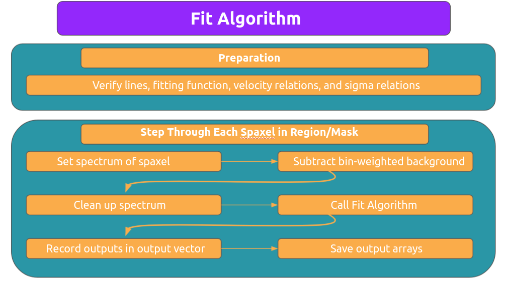

Fitting Algorithm¶
This section contains the functions used to fit emission lines.
Fitting Functions¶
- class LUCI.LuciFit.Fit(spectrum, axis, wavenumbers_syn, model_type, lines, vel_rel, sigma_rel, ML_model, trans_filter=None, theta=0, delta_x=2943, n_steps=842, zpd_index=169, filter='SN3', bayes_bool=False, uncertainty_bool=False, mdn=True)¶
Class that defines the functions necessary for the modelling aspect. This includes the gaussian fit functions, the prior definitions, the log likelihood, and the definition of the posterior (log likelihood times prior).
All the functions (gauss, sinc, and sincgauss) are stored in LuciFuncitons.py.
All functions for calculating the velocity, broadening, and flux are in ‘LuciFitParameters.py’.
All the functions for Bayesian Inference with the exception of the fit call are in ‘LuciBayesian.py’.
The initial arguments are as follows: :param spectrum: Spectrum of interest. This should not be the interpolated spectrum nor normalized(numpy array) :param axis: Wavelength Axis of Spectrum (numpy array) :param wavenumbers_syn: Wavelength Axis of Reference Spectrum (numpy array) :param model_type: Type of model (‘gaussian’) :param lines: Lines to fit (must be in line_dict) :param sigma_rel: Constraints on sigma (must be list) :param ML_model: Tensorflow/keras machine learning model
- apply_transmission()¶
Apply transmission curve on the spectra according to un-redshifted axis. This is done before we interpolate onto the wavenumbers_syn so that the axis align properly. Note – the values of the x-axis are not important for this division since we have already interpolated the transition filter vector over the UNSHIFTED spectral axis.
- calc_chisquare(fit_vector, init_spectrum, init_errors, n_dof)¶
Calculate reduced chi 2
- Parameters
fit_vector – Spectrum obtained from fit
init_spectrum – Observed spectrum
init_errors – Errors on observed spectrum
n_dof – Number of degrees of freedom
- Returns
Chi squared value chi2dof: Reduced chi squared value
- Return type
chi2
- calc_sinc_width()¶
Calculate sinc width of the sincgauss function
- calculate_correction()¶
Calculate correction factor based of interferometric angle. This is used to correct the broadening
- calculate_noise()¶
Calculate noise level in spectrum. We assume the noise is homogenous across the spectrum. We estimate it by taking a region outside of the filter and calculating the standard deviation in that region. We use the normalized spectrum since that is what is passed to the fit function.
- calculate_params()¶
Calculate the amplitude, position, and sigma of the line. These values are calculated using the scipy.optimize.minimize function. This is called on the log likelood previously described. The minimization algorithm uses the SLSQP optimization implementation. We have applied standard bounds in order to speed up the fitting. We also apply the fit on the normalized spectrum. We then correct the flux by un-normalizing the spectrum.
- check_fitting_model()¶
This function checks to see that the model provided is in the available options Return: Nothing if the user provides an appropriate fitting model Else it will throw an error
- check_lengths()¶
This function checks to see that the length of the sigma_rel and vel_rel arguments are correct Return: Nothing if the user provides appropriate length Else it will throw an error
- check_lines()¶
This function checks to see that the lines provided are in the available options Return: Nothing if the user provides appropriate lines Else it will throw an error
- cont_estimate(sigma_level)¶
TODO: Test
Function to estimate the continuum level. We use a sigma clipping algorithm over the restricted axis/spectrum to effectively ignore emission lines. Therefore, we are left with the continuum. We take the medium value of this continuum as the initial guess.
- Parameters
sigma_level – Sigma level to clip (Default=1)
- Returns
Initial guess for continuum
- estimate_priors_ML(mdn=True)¶
Apply machine learning algorithm on spectrum in order to estimate the velocity. The spectrum fed into this method must be interpolated already onto the reference spectrum axis AND normalized as described in Rhea et al. 2020a. :param mdn: Boolean to use MDN or not (default True)
- Returns
Updates self.vel_ml
- fit()¶
Primary function call for a spectrum. This will estimate the velocity using our machine learning algorithm described in Rhea et al. 2020a. Then we will fit our lines using scipy.optimize.minimize.
- Returns
{“fit_vector”: Fitted spectrum, “velocity”: Velocity of the line in km/s (float), “broadening”: Velocity Dispersion of the line in km/s (float)}
- Return type
dictionary of parameters returned by the fit. The dictionary has the following form
- fit_Bayes()¶
Apply Bayesian MCMC run to constrain the parameters after solving
- interpolate_spectrum()¶
Interpolate Spectrum given the wavelength axis of reference spectrum. Then normalize the spectrum so that the max value equals 1
- Returns
Populates self.spectrum_interpolated, self.spectrum_scale, and self.spectrum_interp_norm.
- line_vals_estimate(line_name)¶
TODO: Test
Function to estimate the position and amplitude of a given line.
- Parameters
line_name – Name of model. Available options are ‘Halpha’, ‘NII6548’, ‘NII6543’, ‘SII6716’, ‘SII6731’
- Returns
Estimated line amplitude in units of cm-1 (line_amp_est) and estimate line position in units of cm-1 (line_pos_est)
- log_likelihood(theta)¶
Calculate log likelihood function evaluated given parameters on spectral axis
- Parameters
- List of parameters for all the models in the following order (theta) – [amplitude, line location, sigma, continuum constant] The continuum constant is always the last argument regardless of the number of lines being modeled
yerr – Error on Spectrum’s flux values (default 1e-2)
- Returns
Value of log likelihood
- multiple_component_vel_constraint()¶
Constraints for the case that we have multiple components. If there are two components (i.e. the user passes the same line twice), we require that the first component has a higher velocity than the second component. This forces the solver to find the two components instead of simply fitting the same component twice.
- restrict_wavelength()¶
Restrict the wavelength range of the fit so that the fit only occurs over the central regions of the spectra. We do this so that the continuum is properly calculated.
- sigma_constraints()¶
Set up constraints for sigma values before fitting line :returns: Dictionary describing constraints
- vel_constraints()¶
Set up constraints for velocity values before fitting line :returns: Dictionary describing constraints